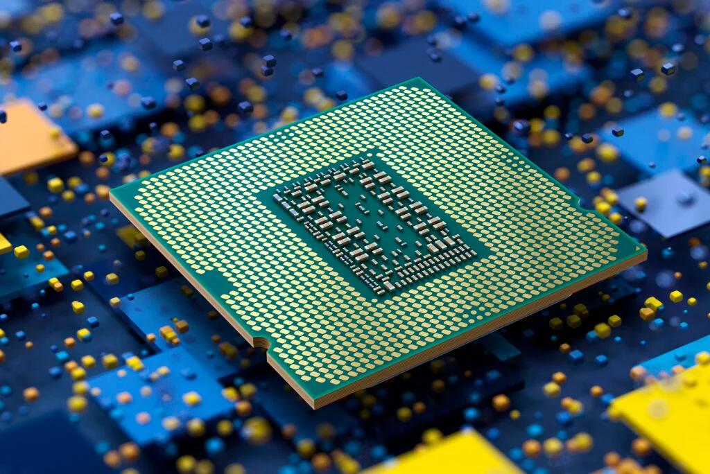

Arbeidsminne
Arbeidsminne finner du i datamaskinens RAM-brikke (Random Access memory) Prosessorens beregninger lagres i RAM-brikken Dette er et midlertidig minne, som betyr at det ikke blir lagret vis datamaskinen ikke er på RAM er viktig for at prossessoren skal kunne arbeide raskt og effektivt, med lite RAM vil behandling av store bilder og video bli svært tidkrevendeFakta:
- Finnes i RAM-brikken
- Hjelper CPU å prossesere store bilder
- Er et midlertidig minne

CPU
Prosessoren er datamaskinens hjerne, forkortet heter den CPU Består av mange små transistorer Datamaskinen utfører beregninger og tar beslutninger i maskinens prosessor Prosessoren ligger oppå maskinens hovedkort sammen med en vifte som skal kjøle ned prossessorenså den ikke overoppheterFakta:
- Hjernen til maskinen
- LIgger oppå hovedkortet

Hovedkort
Hovedkortet er hovedkomponenten i datamaskinen bindeleddet mellom alle komponentene Hovedkortet har informasjonen datamaskinen trenger for å starte opp, ligger i ROM Hovedkortet har i oppgave å åpne alle opreativvsystemene når maskinen skrus påFakta:
- Binder komponentene sammen
- På engelsk heter det "motherboard
- Har oppstartsinformasjonen til maskinen